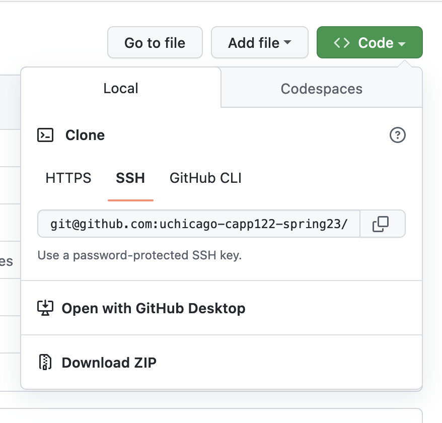

Programming Assignments
There will be seven programming assignments and a final project.
Note
For planning purposes, it may be helpful to know Homework #0 and #6 are shorter than the rest.
All programming assignments in this course will be distributed via GitHub Classroom and submitted via Gradescope. The dates are on the schedule.
Checking Out an Assignment
- When an assignment is made available a link to GitHub classroom will be posted on Ed. Clicking the link will create a new private repository for the assignment.
-
Once the repository is created, you will want to clone the repository to your machine.
Visit your repository on GitHub, and click on the green "Code" button. Be sure SSH is selected as pictured. Copy the URL to the repository.

To check out your project, you can run
git clone <URL>from the machine you're doing your work on. -
Once the assignment is checked out, the first step will be
uv sync, this will ensure you have the appropriate packages downloaded for the assignment. - Each assignment has a README.md, this contains the full description of the assignment. It is recommended you read all the way through before beginning, careful reading of requirements is a skill being practiced in this class.
Working on an Assignment
General Tips
-
Install dependencies. Once the assignment is checked out, first run
uv sync. This will ensure that you have the necessary packages for this project, details will be discussed in class. -
Read the instructions carefully - Make sure you understand what you're being asked to do before you start writing code. If you're not sure, ask for clarification.
-
Check in often - Check your code into git and push to GitHub regularly. This will help you avoid losing work if something goes wrong with your machine.
-
Run the tests - The tests are there to help you. If you're not sure if your code is correct, run the tests and see if they pass. If they don't, read the error messages carefully - they may give you a hint as to what's wrong.
-
Experiment in the REPL - If you're not sure how a particular function or method works, try it out in the REPL (
python3oripython). A major advantage of interpreted languages is this ability to experiment interactively. -
Ask questions of course staff - If anything is not clear, ask questions via Ed! If you are stuck or need help with a concept, office hours may be a good idea as well! See Getting Help for more advice on how to ask for help.
-
Use a Linter.
ruffwill be introduced and is recommended. Using it (or a linter of your choice) in this course will let you focus on the actual problem, help you write cleaner code, and detect common issues that may result in a lower grade.
pytest Tips
Each assignment comes with a set of tests to be run with pytest.
(If you are using uv, remember to prefix all pytest commands with uv run!)
pytest has some helpful command line options you may wish to use:
- Passing a filename like
tests/test_markov.pywill run only the tests in that file. -vwill print out more information about each test-vvwill print out even more information about each test, particularly useful when comparing expected output vs. actual-swill include any output fromprintstatements (normally suppressed bypytest).-k <pattern>will only run tests whose names match the pattern. (Sopytest -k frontendwould matchtest_frontend_templateandtest_frontend_callbut nottest_database_setup, etc.)-xwill stop running tests after the first failure.
Grading
We will be using specifications grading in this course. The goal of specifications grading is to help students focus on their mastery of the material and identify areas for improvement as the quarter progresses.
Shorthand: focus on skills, not scores.
If you are new to using specifications grading, here's what you can expect:
- For each assignment you will be given a set of specifications. Meeting all/most of those will earn the highest grade. This is described in detail below, but aims to allow you to focus on learning and not on the difference between an 89 and a 90 on an assignment. It also more closely resembles how work is evaluated in the real world, where work is either satisfactory or not.
- Where time permits, we will allow resubmissions of work to learn from mistakes. The specific policy is detailed below.
SNU Scale
Programming Assignments will be evaluated using an SNU scale:
-
Satisfactory (S): While the work has some room for improvement, the student has put in a good-faith effort to complete all the work and demonstrated sufficient mastery of the material.
-
Needs Improvement (N): The student has put in a good-faith effort to complete the work, but revealed a lack of mastery in the material that can be addressed via concrete feedback. The work could become Satisfactory with some major revisions.
-
Ungradable (U): The student did not submit any work, or did not complete a sufficient portion of the work to be graded.
All assignments will be evaluated for completeness and code quality, and given a grade for each.
Completeness will be determined using an automated test suite. "Does your code do what we asked of it?"
Code quality will be evaluated by reviewing the code for:
- adherence to the style guide
- appropriate choice of algorithms and data structures
- appropriate use of functions and classes to structure the computation.
Resubmissions
You will be allowed to resubmit one programming assignment (not the project).
Once a programming assignment is graded and returned to you, there will be a two week window for you to resubmit that assignment. This means that, if you produce work that needs some improvement, you will have a chance to address the grader's feedback to improve your score on that assignment.
The procedure for resubmissions will be shared via Ed.
Late Submissions
Late submissions will not be accepted in this class, except under extraordinary circumstances. Please bear in mind that the grading scheme will be set up to absorb a reasonable amount of sub-par work, and also allows you to resubmit at most one programming assignment.
That said, to be clear: if you encounter some sort of emergency (medical, family, etc.) please reach out to your instructor as soon as you are able to do so. We are more than happy to find ways to provide additional flexibility in these situations. Ideally, you should notify us of these circumstances before the work is due so we can discuss options with you.
In other words, the late submission policy applies to ordinary circumstances: if you are having a busy week, you have an event that overlaps with a deadline, etc., then the grading scheme will have some built-in flexibility for this. Instead of trying to argue for a few extra days to work on an assignment, you should just submit the work you have completed by the deadline, so you can get feedback on that work and use that feedback to improve your work in future assignments, or even to resubmit the assignment as described above.
Grading Disputes
Except in very specific cases (described below), you cannot dispute the score assigned to you on a piece of work. The score you receive on a piece of work is meant to convey feedback on your level of mastery, and you should take it as an opportunity to understand the areas of improvement in your work. You are more than welcome to ask us for concrete advice on how to improve your work, and we are always more than happy to have those kind of conversations with students, including going over your code. On the other hand, we will not entertain requests to change your score just because you feel your work deserved a higher score.
There is one exception to this: if a grader made an factual mistake in your grading. Please note that this only includes cases where a grader makes an erroneous statement about your code in their feedback. It does not include cases where you simply disagree with whether something deserves to be flagged as incorrect.
For example, suppose you receive a piece of feedback that says “Incorrect: Function X did not check that parameter Y is greater than zero”. If function X in your code did perform this check, and the grader missed this fact (and erroneously gave you that feedback), you can ask us to review this decision. Please note that, even if the feedback is amended, it may not affect your actual SNU score.
We ask that you keep these requests brief and to the point: no more than a few sentences identifying the exact statement that the grader made and the reasons you believe the statement was mistaken, including references to specific parts of your code (e.g., “I did check the value of the parameter in line 107”). Focus on laying out the facts, and nothing else.
Finally, it is also your responsibility to make these requests in a timely manner. Requests to review grading mistakes must be submitted no later than one week after a graded piece of work is returned to you. After that time, we will not consider any such requests, regardless of whether the request is reasonable and justified.
Disputes should be submitted via the Regrade Request mechanism of Gradescope.
Code Quality & Efficiency
Producing code that solves a problem is only part of the task, that code needs to be intelligible to your fellow developer and/or future self. Hard to understand & overly complex code is source of subtle bugs.
The criteria below are things the graders will look for on every assignment. Some assignments may have additional criteria noted in the README.
Each assignment will have a threshold of how many points you can have deducted and receive an S (typically 1-3), an N (typically 3-5). Assignment with serious quality issues may receive a U for code quality & efficiency even if all tests pass.
Code Quality: Banned Constructs (-2)
Some Python features are considered bad practice in production code.
While you will see these in examples, most projects & teams prohibit their use.
Banned Constructs:
- use of a bare
exceptorexcept Exceptionstatement - use of
import *is explicitly banned in this class
Examples:
from modA import *
from modB import *
# The origin of symbols used in this file are not clear.
# In fact, reordering the imports or changes to either
# could result in the code breaking if the two modules
# define the same.
# INCORRECT: this code incorrectly catches the NameError
try:
func(this_variabl_has_typos)
except:
...
# CORRECT: this only catches ValueError, so if func raises
# that error it is correctly handled
try:
func(this_variabl_has_typos)
except ValueError:
...
Code Quality: Incomplete (-1.5)
An assignment that is missing significant portions will have this penalty applied in addition to any present in the code.
(This makes it less likely that incomplete assignments will get an S due to lack of code meaning a lack of style issues.)
Code Quality: Function Decomposition (-1)
- The presence of copy/pasted code where it would be more appropriate to use a helper function.
- One large function that does many things instead of smaller functions.
Code Quality: Non-idiomatic (Unpythonic) Code (-1)
Code that does not use Python's features correctly.
Example:
# INCORRECT: this code obtains an integer only to index back into
for i in range(len(items)):
print(items[i])
# CORRECT: use direct iteration, or enumerate
for item in items:
print(item)
for idx, item in enumerate(items):
print(idx, item)
Code Quality: Variable Names (-0.5)
- Variable names should be meaningful & aid in understanding of the code.
- Avoid using single letter names (other than in common contexts like i/j to loop over integers).
Code Quality: Commenting (-0.5)
Comments should enhance understanding of the code.
- Code that is significantly under-commented. (Complex sections with no explanation at all.)
- Code that is significantly over-commented, meaning code that describes "how" instead of "why".
- Missing docstrings on multiple functions.
Code Quality: Hard to Read (-0.5)
Not following other general formatting guidelines that aim to increase readability.
- Improper indentation.
- Code consistently exceeding line length.
- Improper use of blank lines per style guide.
- Debugging statements left in (
print,breakpoint, etc.). - Use of "magic numbers" or strings where constants would be appropriate.
Efficiency: Duplicating Data (-1)
Duplicating data in unnecessary ways, such as copying a list to a tuple for no reason.
# INCORRECT: creates three copies of the list of words
def get_unique_words(text):
words = text.split()
lowercase_words = [word.lower() for word in words] # copy 1
cleaned_words = [word.strip('.,!?') for word in lowercase_words] # copy 2
unique_words = set(cleaned_words) # copy 3
return unique_words
# CORRECT: only a single copy
def get_unique_words_efficient(text):
unique_words = set()
for word in text.split():
unique_words.add(word.lower().strip('.,!?'))
return unique_words
Efficiency: Major Memory Inefficiency (-2)
Repeated or extreme memory inefficiency.
Often where hundreds or thousands of records are in memory, where one would have been sufficient.
# CORRECT
for item in csv.DictReader(fd):
process_data(item)
# INCORRECT: creates an entire second copy of the data
# despite there only being a need to access one at a time
items = list(csv.DictReader(fd))
for item in items:
process_data(item)
Repeated minor efficiency issues (-1)
Two or more small issues that lead to code being slower/less efficient than it should be.
Some examples:
- Reimplementing built in functions.
- Combining lots of strings using
+instead of.joinor f-strings. - Incorrect data structure (e.g. using a list to keep unique items instead of a set)
Redundant work (-1)
Doing redundant work, like going through a list twice when a single pass would have sufficed.
This can be thought of as "too many loops", looping three or more times when one would do.
Or in terms of complexity, this can be thought of as turning an O(N) into an O(2N) or similar.
Example:
# INCORRECT: this code iterates through the data twice
count_positive = sum(1 for x in data if x > 0)
count_negative = sum(1 for x in data if x < 0)
# CORRECT: this code iterates once
count_negative = 0
count_positive = 0
for x in data:
if x < 0:
count_negative += 1
elif x > 0:
count_positive += 1
Major performance issue (-2)
This penalty applies to solutions where a drastically more efficient solution exists.
"Completely unnecessary loop" or "Too many nested loops"
In terms of complexity this might mean:
- O(1) into O(N)
- O(N) into O(N^2)
Example:
# INCORRECT: O(N^2) implementation that needs a nested for loop
def find_duplicates_quadratic(lst):
duplicates = []
for i in range(len(lst)):
for j in range(i + 1, len(lst)):
if lst[i] == lst[j] and lst[i] not in duplicates:
duplicates.append(lst[i])
return duplicates
# CORRECT: O(N) implementation that uses a set appropriately
def find_duplicates_linear(lst):
seen = set()
duplicates = set()
for item in lst:
if item in seen:
duplicates.add(item)
seen.add(item)
return duplicates